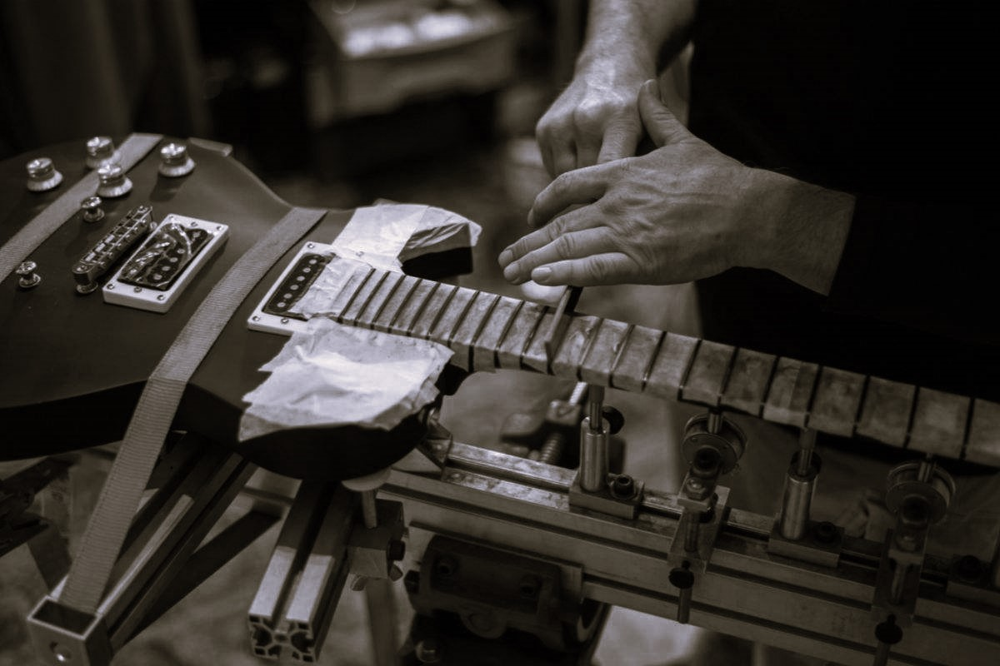
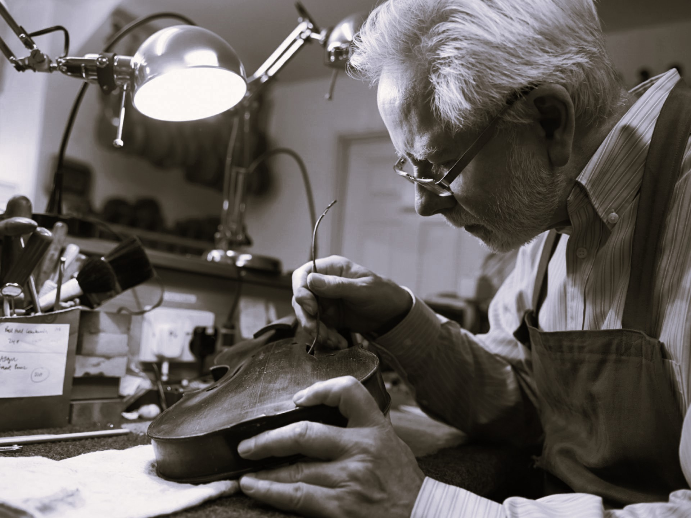
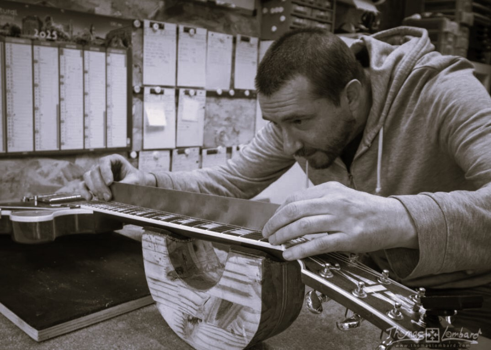

Tradición del luthier
Detrás de cada guitarra hay siglos de tradición, precisión y arte.
¿Qué es un luthier?
Un luthier es un artesano especializado en la construcción, ajuste y reparación de instrumentos de cuerda. No solo fabrica guitarras, sino también violines, bajos o instrumentos históricos, trabajando cada pieza con extrema precisión para conseguir el mejor sonido posible.

Origen e historia
El término "luthier" proviene del francés luth (laúd). Desde la Edad Media, estos artesanos han evolucionado combinando técnicas tradicionales con herramientas modernas, manteniendo siempre la esencia manual.

El arte del sonido
Cada madera, cada corte y cada ajuste influye directamente en el tono. Un buen luthier no solo construye, entiende cómo vibra el instrumento y cómo se transforma en sonido.
